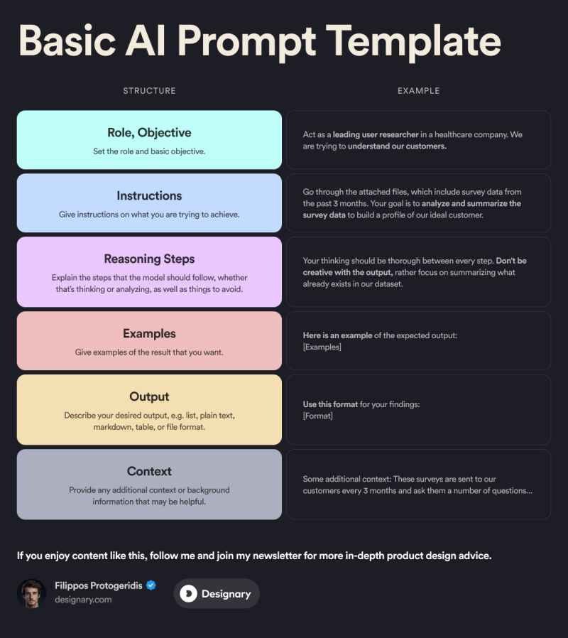
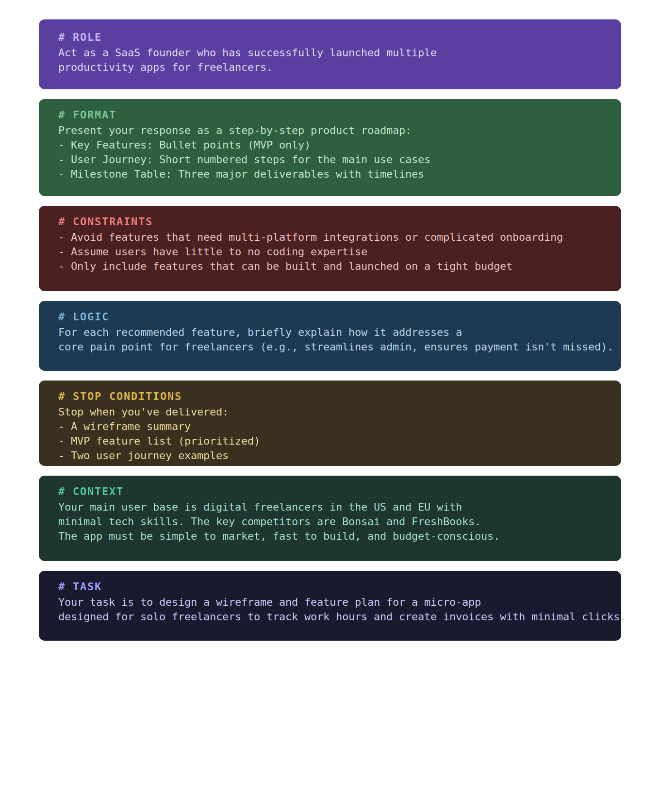
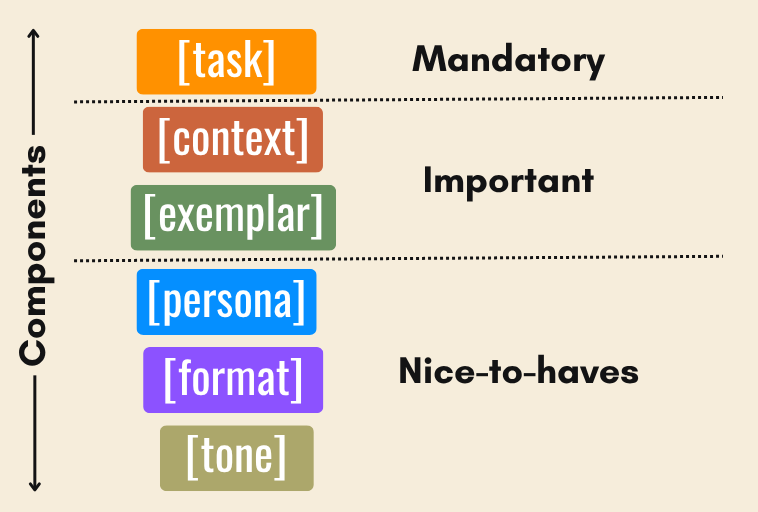
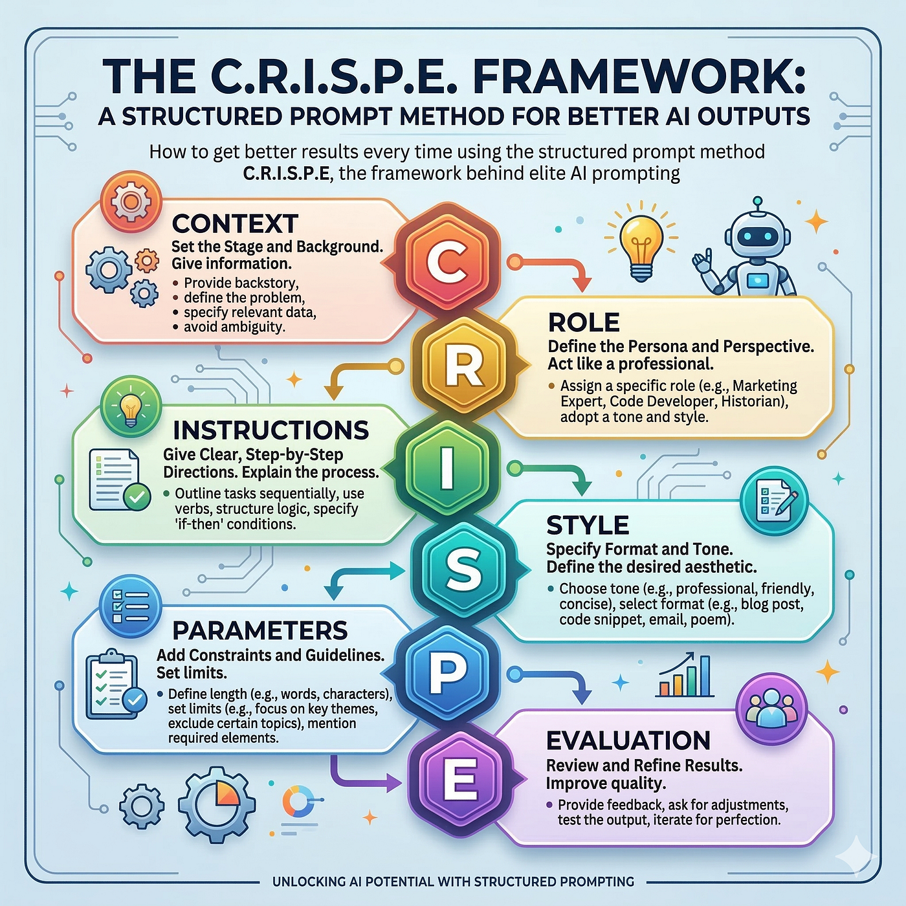
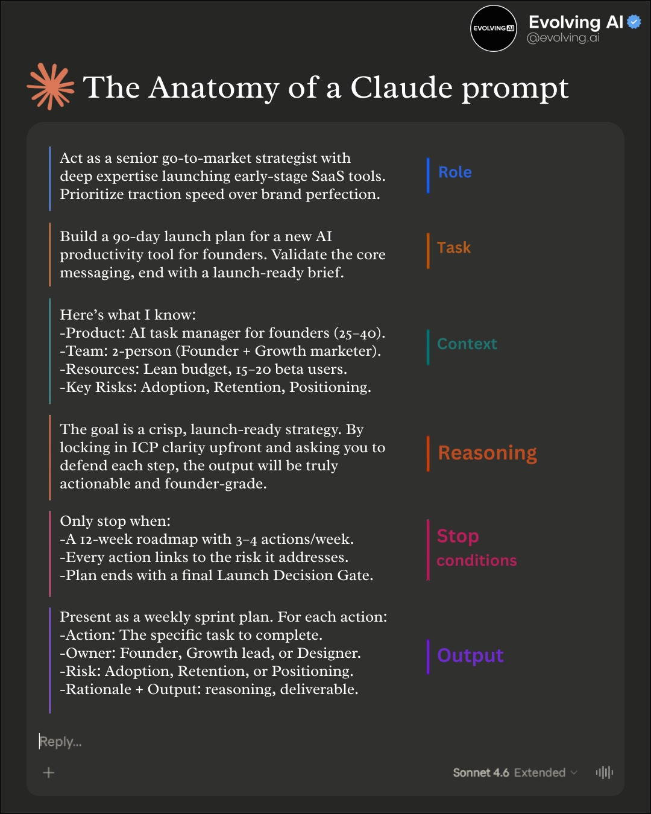
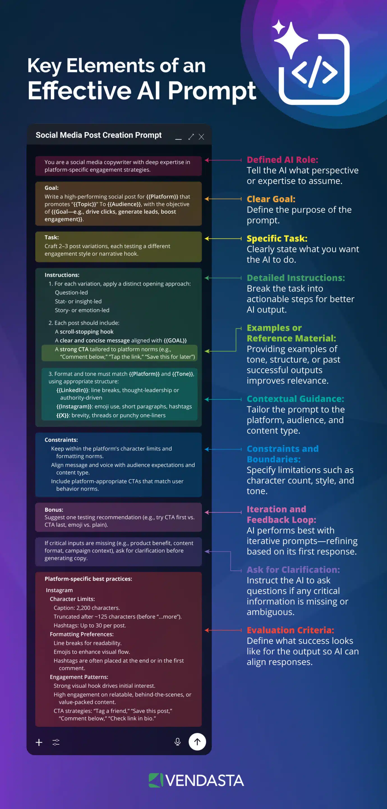
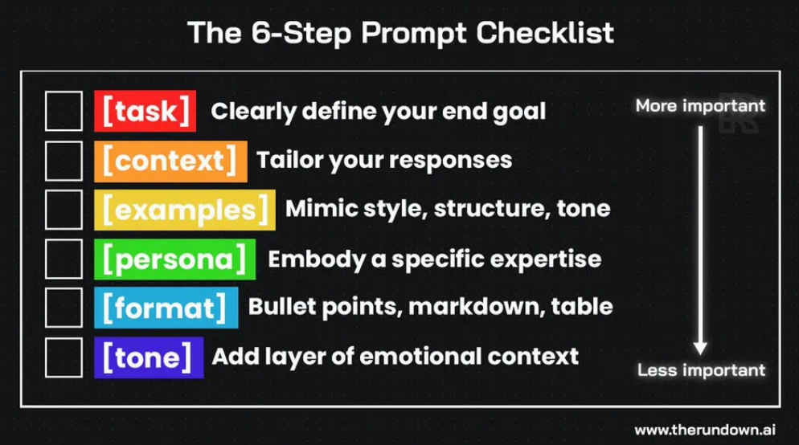

It's a Menu, Not a Checklist
The levers are not a checklist to fill out every time. They're a menu of levers you can choose from.
Structure
Every framework is the same handful of levers. Your job is choosing which ones this task needs, not filling them all in.








Key Points
The tiers come straight from the honest framework you already like — Mandatory / Important / Nice-to-have
The one I find most honest is the one that breaks components into mandatory, important, and nice-to-have. It's the only framework that tells you what to skip. Task first. Always. Then context and examples. Everything else is optional depending on what you're building.
The mistake I used to make, and still see constantly, is treating all of these as a checklist to fill out every time. They're not. They're a menu. Your job is knowing which items your specific task actually needs.